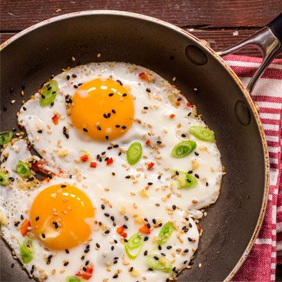

Fried Egg

Description
One of the basic egg dishes. Drowning it in oil is the best way.
Ingredients
- 1 egg
- 3 chillies
- 1 onion
- 1 green onion
- Olive oil
- Seasonings (Optional)
Steps
- Pour enough oil where you can drown your egg
- Break the egg, and drop the white and yolk onto the pan
- Cook for 2-3 minutes. Be careful not to overcook the yolk, make sure it remains slimy.
Cook until you see a good amount of golden brown edges
- Take the fried egg, sprinkle with chopped chillies